无穷大这个概念一直令人耿耿于怀，其实并不奇怪。从古希腊时期开始，人们就开始思考无穷大是否存在、本质是什么的问题。古希腊人肯定知道，用于计数的正整数序列没有尽头。如果真的有最大的整数（我们用max来表示这个数），就必然有max + 1、max + 2等更大的数。但是，无穷大概念让古希腊人很不舒服，他们用来表示这个概念的“阿派朗”（apeiron）一词就有混乱的含义。
哲学家亚里士多德就曾对这个概念进行过研究，他的观点在随后几百年时间里一直占据主导地位。公元前384年，亚里士多德出生于希腊北部。他认为，无穷大具有必然性，但是又无法达到。他从世间万物中找到了一些他认为属于无穷的例子，例如，他认为整数（我们已经知道整数是无穷的）和时间就是无穷的。此外，他还认为有的东西是无限可分的。但是，与此同时，他又提出了几个含混不清的观点，想证明无穷大不可能存在于现实世界中。例如，他说任何物体都有边界，如果某个物体是无穷大的，它就不可能有边界，也就不可能存在。
在明显经过一番艰苦的心理斗争之后，亚里士多德最终断定无穷大不是一种存在于现实世界的概念，而是一种潜在的可能性，在现实中永远无法实现。无穷大是存在的，但是不能根据需要变为现实。他以古代奥运会比赛为例，简单明了地介绍了自己的这个想法。比赛毫无疑问是存在的，肯定不是一个虚构的概念。但是，一般而言，如果有人请你把奥运会比赛展示给他看，你肯定做不到。因此，奥运会比赛就是一个潜在的实体，你没有办法仔细端详，小心鉴别。亚里士多德小心翼翼地指出，尽管某些潜在实体在特定时间或特定空间里会变成现实，但是无穷大不包括在内。
牛顿和莱布尼茨创立微积分的时候，使用的正是潜无穷的概念（参见第9章）。微积分中的无穷大是一种极限。我们非常熟悉的双纽线符号（∞），表示的就是这种可望而不可即的目标，也就是亚里士多德所讲的潜无穷。与牛顿同时代的约翰·沃利斯在一篇枯燥乏味的论文中第一次使用了这种符号。但是，沃利斯仅仅说了一句“用∞表示无穷大”，却没有解释这个符号从何而来。
直到19世纪，绝大多数数学家都认为亚里士多德的观点是正确的。他们普遍认为，潜无穷这个概念是正确理解无穷大的唯一可行的途径。例如，享有盛名的19世纪德国数学家卡尔·弗里德里希·高斯明确地说：
我反对将无穷量视为一个实体，这在数学中从来都是不允许的。所谓无穷，只是一种说话的方式，其真正的意义是指某些比值无限接近于某个极限，而另一些比值则可以无限增大。
但是，并不是所有数学家都被这种思想蒙蔽了双眼，伽利略就是这些异类中最引人注目的一个。一说到伽利略，我们首先想到的是他因为支持哥白尼的日心说而受到宗教裁判所的审判并被终身监禁。但是，伽利略对科学领域做出的最重要的贡献其实是他于1638年出版的《两种新科学的对话》。这是他在物理学领域的代表作，为牛顿成功完成关于力学和运动的研究奠定了基础。
同他支持哥白尼的日心说、给他带来无数麻烦的那部著作一样，这部新作也采取了三人对话的形式（这在当时十分流行）。它放弃了古板的拉丁语，改用意大利语，可读性远胜牛顿用专业术语撰写的几乎无法理解的作品。在此之前，伽利略因为出版著作已经被判终身监禁，这本书可以成功出版的确不是一件易事。最初，伽利略准备在威尼斯出版这本书。当时，威尼斯因为从罗马帝国独立出去而自视甚高。但是宗教裁判所发出了一系列禁令，禁止出版伽利略的所有作品。伽利略只有获得宗教裁判所的批准，才能出版自己的这部新作。
顽强不屈是伽利略最显著的特点。尽管受到禁令的限制，而且间接违反禁令的钻空子行为将会为他带来危险，但伽利略没有放弃。1636年，荷兰出版商洛德韦克·埃尔泽维尔造访意大利，伽利略想办法把手稿送给他看。在最终付梓成书时，人们发现它的献词非常有意思。之前，伽利略每次都会把他的作品献给权势人物，而且从不吝啬他的赞美之词（很可能是因为当时谄媚成风）。作为交换，他有可能得到对方的资助。但是，这本书却被献给了他以前的学生、法国驻罗马大使弗朗索瓦·德·诺瓦耶，而且他在写献词时十分小心。显然，他绝不希望给诺瓦耶惹来麻烦。
从字里行间可以看出伽利略既有简单直接的一面，又有迂回曲折的一面。宗教裁判所受他蒙骗的可能性非常小，但他们似乎并不是很重视这件事。伽利略称：
我已经决定不再出版任何成果。但是，为了我的研究不被彻底遗忘，我觉得有必要在某个地方留一份手稿，至少让那些研究相同内容而且方法得当的人有机会看到它。因此，我首先想到要将我的研究成果交到阁下手中……
伽利略既感谢诺瓦耶的热心帮助，又不想让人们认为诺瓦耶是负责这本书的出版事宜的人，因此，他抛出了几个神秘的中间人：
埃尔泽维尔告诉我他们准备出版我的这些成果，要求我起草献词并且立刻做出答复。这些出版商曾经出版过我的一些成果，因此他们希望继续出版我的这项成果，并把它变成漂亮的精装版书籍。这个消息让我深感荣幸，也有些措手不及。我知道，他们能拿到我的手稿，是因为阁下为了帮助我恢复和传播名声而把我的成果介绍给了几位好友。
他对诺瓦耶心怀感激，同时又表示，手稿到达出版商的手里是诺瓦耶的几位不知名的朋友促成的。很显然，伽利略在这本书即将付印时才收到消息的说法是不真实的。早在埃尔泽维尔造访意大利时，伽利略就想尽办法把书稿送到了他手上。不仅如此，他和埃尔泽维尔还有书信往来，就这本书的内容进行过深入探讨。伽利略是一位令出版商咬牙切齿、捶胸顿足的作者，因为不到最终出版他都不会停止修改书稿。即使在采用电子印刷技术的现代，这种行为也会导致相当大的麻烦。而在当时，人们必须利用活字印刷术小心翼翼地将所有书页制成一个个印刷版，因此，任何修改都是一场可怕的噩梦。然而，无论是因为宗教裁判所遭受了蒙蔽，还是因为他们睁一只眼闭一只眼，这本书最后还是成功出版了，但伽利略的祖国意大利并没有公开发售。
书名中所说的“两门新科学”是指对固体物质的本质研究与对运动的分析，无穷大的概念出现在这本书的第一部分。在分析固体物质紧密结合在一起的原因（例如，金属块为什么难以分割）时，书中的一位主角认为，构成这些固体物质的粒子之间的真空将它们紧密地吸附在一起。（真正的原因其实是电磁作用，因此他的这个观点是不正确的，但听起来有些道理。）这个说法遭到了辛普利西奥（书中三个人物之一）的质疑，辛普利西奥是古希腊思想的信徒，他的任务就是质疑新思想。他认为，由于空间十分狭小，即使有真空存在，作用力也会非常小，远不足以让金属紧密地吸附在一起。
于是，三个人继续思考。很多微弱的作用力加到一起，是不是可以变成一股异常强大的作用力呢？三人中的萨格雷多说：“也就是说，数量庞大的蚂蚁群可以抬起装满谷物的船。”他认为，无数个微小的作用力加在一起，就可以克服任何阻力，只要这个阻力不是无穷大的。萨格雷多的“只要这个阻力不是无穷大的”这个条件，遭到了萨尔维亚蒂的嘲笑。萨尔维亚蒂在这本书中主要是扮演伽利略的代言人，他说，即使一个物体的大小有限，其内部也完全有可能存在无穷多个真空。
这似乎是一种托词，伽利略的真正目的可能是提出几个与无穷大有关的有趣想法，因为他接下来又用大量篇幅探讨了无穷大的本质。与亚里士多德提出的那个说服力不足却令数学界认可了很多年的潜无穷概念不同，伽利略给出的是一个实实在在、没有任何掩饰的事实。他画了一个想象出来的奇怪的组合图形，用来说明无穷大的神奇特性。
这个组合图形是由大小不同的两个六边形组成的，小的六边形贴在大的六边形前面，6个角对齐，都位于水平轨道上。然后，萨尔维亚蒂请另外两个人想象着把这两个六边形转动1/6圈。这个六边形“车轮”向前移动的距离应该等于大六边形的边长，因为现在是第二条边在最下面。这个结果没有什么稀奇的地方。但是，我们知道小六边形的边长要短得多。小六边形沿着轨道转动了1/6圈，因此它移动的距离应该是小六边形的边长，但是实际上，它前进的距离却等于大六边形的边长。
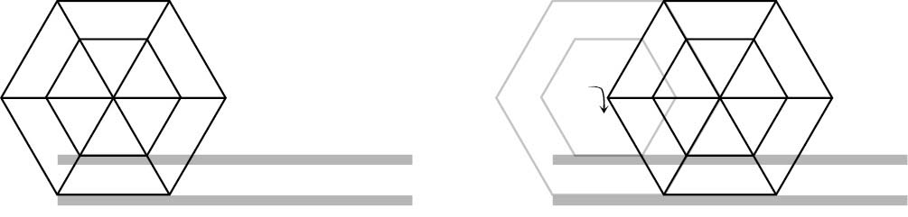
这个现象并不难解释。大六边形转动时，小六边形就会从轨道上被抬起，向前跳跃，跳跃的距离正好等于这两个六边形边长的差。因此，小六边形不仅向前移动了一个边长的距离，还向前跳跃了一段距离，两者之和正好等于大六边形的边长。
到目前为止，这个解释没有任何问题。接着，伽利略想，如果多边形的边数不断增加，结果会怎么样呢？随着边数增加，车轮转动1/6圈时，大多边形就会有更多的边参与这个过程，同时，小多边形需要完成更多次的小幅跳跃。在接下来的想象中，伽利略展现了他的聪明才智。他不断增加多边形的边数，直至车轮变成圆形。此时，多边形的边数实际上变成了无穷大。在这种情况下，如果整个车轮转动1/6圈，小车轮也会转动1/6圈，但是它仍然可以与大车轮保持同步，向前移动相同的距离。此时，由于车轮是标准的圆形，因此它应该不会在轨道上跳动。
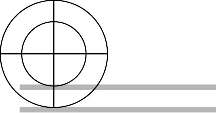
这就令人感到迷惑不解了（辛普利西奥对此感觉尤为奇怪）。伽利略借萨尔维亚蒂的口说，这是因为小车轮完成了无穷多个幅度无穷小的跳跃，这些跳跃的总长度，正好弥补了小车轮移动距离上的不足。萨尔维亚蒂一面满怀愧疚地承认这个事实令人震惊，一面又请求不妨放下该书当前讨论的内容，转而对无穷大这个概念加以研究。另外两个人也高兴地同意了他的请求。
他们先举了一个晦涩难懂的例子，并用几何方法证明了点的集合与圆的圆周有可能大小相同，然后又回过头来继续讨论这些车轮。辛普利西奥发现，第一个例子似乎包含两个无穷大：大车轮周长的1/6是由无穷多个点构成的，小车轮周长的1/6也是由无穷多个点构成的。这两个数都是无穷大，但是一个无穷大对应的结果却大于另一个。萨尔维亚蒂先是敷衍搪塞，说从有穷的角度去理解无穷的概念，就会导致这个问题，但紧接着他又试图向辛普利西奥证明，这是无穷大的内在属性造成的一种奇怪现象。
他的证明使用了正整数（即自然数）的平方数这个概念。萨尔维亚蒂说，每个自然数都对应一个平方数。辛普利西奥欣然同意这个说法。接着，萨尔维亚蒂又问他，自然数有无穷多个，而且每个自然数都对应一个平方数，那么这些平方数的个数是不是等于正整数的个数呢？答案显然是肯定的。但是，正整数中还有很多数本身并不是平方数，例如2、3、5、6、7等。也就是说，每个平方数都会对应一个自然数，而自然数的个数远多于平方数。
伽利略通过这番讨论明确地告诉我们，传统的运算法则不适用于处理实无穷。此时，“相等”、“小于”、“大于”等概念也会失去它们的传统含义。我们可以说一个无穷集（例如正整数集）可能包含无穷子集（例如平方数集）。伽利略笔下的这三个人之所以遭遇麻烦，原因之一就是他们把无穷大看作一个数字（伽利略就是这样想的）。我们现在不会把无穷大看作一个数字。我们可以说某些事物构成了一个无穷集，但不会说这是一个无穷大的数字。如果伽利略晚出生200年，就会明白其中的道理。
在伽利略之后，所有人都把眼光投向了更容易让人接受的潜无穷概念。直到19世纪，格奥尔格·康托尔决心揭开其中的真相，才改变了这种状况。康托尔是一名数学家，但是由于他坚信无穷大是一种真实的存在，再加上其他数学家都认为他是在引火烧身，所以，不仅他的职业生涯充满了艰辛，他的精神世界最终也轰然倒塌。康托尔认为，数学和数学家都可以接受无穷大真实存在这个赤裸裸的事实。他试图证明有比无穷大还大的存在。这项似乎根本不可能取得成功的研究，在现实世界中没有明显的实用价值，但康托尔取得的成就并不只是这些。
康托尔还是集合论的创立人，集合论似乎可以解释数学的作用原理。要感受康托尔在无穷大研究领域中表现出来的杰出天赋，我们有必要对集合论稍加了解。在本书第1章，我提到了数字到底是什么以及它们与周围世界存在什么关系的问题。集合论对数字进行了形式上的定义，而且这个定义显然是以现实为基础的，但它又摆脱了现实的束缚，卓尔不群地屹立在柏拉图洞穴外面的数学世界之中。集合论对于数学的意义就相当于原子论对于科学的意义。我们曾经懵懂无知地生活了几千年，但是在接受了原子的存在之后，我们就认同它们是构成自然界的基本单位。同样，在几千年的时间里，数学研究并没有因为集合论的缺失而令我们感到任何不适。但是，集合论问世后就立刻变成一切数学研究的基础。
所谓集合，是指一系列具体事物或者抽象概念。这些事物或者概念都有一个共同的特点（例如一组名叫“布赖恩”的事物或者一组看上去像甜甜圈的事物），或者是基于地点或时间建立起某种联系的随机组合（例如纽约人行道上的所有事物，或者你今天上午想起来的事情）。集合论的某些表达还进入了人们的日常用语。“子集”是指在一个集合中拥有另外某个共同特点的所有元素的集合，是包含在一个大集合中的集合。例如，“美国人”这个集合是“人”这个大集合的一个子集。集合中的各项称作该集合的元素，也就是说，只要你不是智能机器，你就是“人”这个集合中的一个元素。
大家可能见过用维恩图这种直观的方法表示的集合。用维恩图来表示集合的相交与合并，这是很容易理解的。例如，我们可以用下图表示“人”与“在纽约生活的生物”这两个集合（除了人以外，后者还包含很多其他元素）相交的情况，其中重叠的部分代表“在纽约生活的人”。
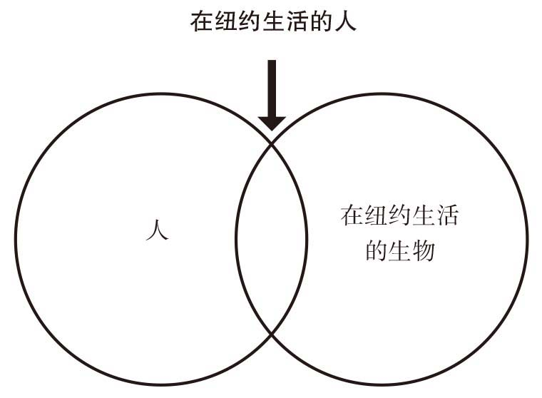
使用搜索引擎时，我们经常会不自觉地使用各种集合。借助“与”“或”“非”等布尔代数术语，我们可以进行集合的合并或者选择。例如，如果你使用下面这个搜索项在网上搜索图片：
（车与美国）（福特或雪佛兰）（非红色）
那么你搜索的就是一个子集：美国车，品牌为福特或雪佛兰，除红色以外的其他颜色。至少以前的搜索引擎是这样工作的。现在的搜索引擎（例如谷歌、必应等）都自视甚高，因此大多不屑于使用这些布尔代数术语。
在处理集合时，数字有两种截然不同的用法，使用时一定要注意区分。本书中使用的1、2、3等数字都是“基数”，这是自然数的主要用法。但是，我们也可以利用数字来规定各子集在集合中所处的位置，此时这些数字叫作“序数”。例如，在考虑橙子集合时，数字3可以指集合中橙子的数量，也可以指集合中的第三个橙子（“3号橙子”）。
我们往往认为序数是数字的一个有用但不怎么重要的用法，但一些人类学家指出，序数的出现早于基数。如果情况属实，我们在第2章里介绍的数山羊活动就应该是另外一种意义了。这些人类学家认为，计数首先不是出现在像贸易这样平淡的事件之中，而是出现在宗教仪式之中，因为宗教仪式中的重要事物必须以正确的次序出现。也就是说，表示次序的数字出现在表示物体数量的数字之前。这些人类学家并没有找到有说服力的证据，而且人们有足够的理由认为，这些人类学家提出这个观点的目的可能是试图说明他们的人生观远比会计人员的人生观更重要。当然，有序计数有可能出现得更早，尽管我们看不出它比掰手指数山羊的方法更有优越性。
描述集合的大小（也称集合的势）非常有用，无论这些集合的大小是否可以表示成数值的形式，我们都可以通过势来比较大小。如果我们设想将两个集合并排，让两个集合的元素结成对，并且形成一一对应的关系（一个集合中的每个元素都能在另一个集合中找到唯一一个与之对应的元素），那么无论我们是否知道这些集合的大小，我们都可以说这两个集合等势。在研究无穷大的概念时，上面说的形成一一对应的关系将发挥非常重要的作用。
如何利用势来比较集合的大小呢？我们可以想象有两个集合，一个是指南针方向构成的集合，另一个是季节集合。我们可以让北与冬季、东与春季、南与夏季、西与秋季分别配对。这样，我们将所有方向和季节都包括进来，而且一个集合中的元素分别与另一个集合中的元素构成一一对应关系。因此，即使我们不知道一共有多少个不同的季节，也不知道有多少个不同的方向，我们也可以说这两个集合等势。事实上，在这个例子中，我们知道集合的元素数量是4。但是，重要的是我们无须知道这个数字。只要可以重复这个一一对应的程序，我们就会知道这两个集合等势。
请大家回想一下令辛普利西奥感到困惑的那个奇怪的现象。每个自然数都可以与一个平方数配对，因此我们知道，自然数集与平方数集等势。但是，我们还知道平方数构成了自然数集的一个子集。后来，康托尔发现，无穷集一定包含一个与自身等势的子集。
在康托尔开始研究集合之前，意大利数学家朱塞佩·佩亚诺就已经利用集合来定义自然数了。在第2章，我们根据真实物体建立了数字系统，尽管最初是从数山羊开始的，但是这套数字系统最后可以应用于所有物体。佩亚诺摆脱了真实物体，单独考虑这些数字，使它们可以仅凭集合的本质而独立存在。这个方法在早期数学中无法采用的原因之一是，它必须建立在“无”（0的化身）这个基本概念的基础上。具体来说，这个方法的起始点是空集，即不包含任何元素的集合，这为数字0的产生奠定了基础。
第二个集合只包含一个元素——前面定义的那个空集。通过这个方法，佩亚诺得到了基数1。接着，他又创建了一个集合，将前面的那个集合包含其中。也就是说，这个集合包含两个集合：空集和包含空集的那个集合。这样，他又得到了基数2。以此类推，只凭一个个集合，我们就像俄罗斯套娃那样，搭建出“自然数”的完整集合（包括0和正整数）。
物理学家罗杰·彭罗斯认为，既然可以用这种方法定义数字，就说明：“只需发挥想象力，这些数字就会栩栩如生地出现在我们的脑海里，我们可以充满信心地使用它们，而不需要考虑物质世界的任何属性。”然而，我认为这个理由包含了不可靠的诡辩术成分。毫无疑问，我们无法仅凭想象力就让自然数“出现”在我们的脑海里，或者说我们无法完全脱离具体物体，凭空想象出这些数字。
而且，所谓集合，就是一系列实体。要建立集合的概念，首先必须有这些实体存在。如果现实世界中没有可以计数的物体，很难想象我们会产生集合的概念。比如，我们假设世界上存在一种有思维能力的生物，它既没有具体形状，又与物质世界没有联系。既然这个生物除了自己的存在以外，得不到任何其他体验，那么它怎么能像我们一样感知到周围世界的多样性呢？它又怎么可能产生自然数、集合等概念呢？
佩亚诺和康托尔借助集合论，使算术脱离了数山羊的现实活动，为数学中的数字奠定了理论基础。从某种意义上看，这个抽象化过程帮助数字摆脱了计数作用，直达数字的本质，因此具有非常显著的意义。但是，这个变化过程也使某些数学家感到不安（时至今日，他们仍然不能释怀），这是因为集合论的核心理论包含一个令人不安的悖论。第一个指出集合论面临这种困境的人是英国哲学家、数学家伯特兰·罗素。
佩亚诺通过创建以其他集合作为自身元素的集合，推导出了自然数。与之相似，罗素研究的是另一种包含子集的集合，具体地说，他是从集合是不是自身的元素这个角度展开研究的。这个说法似乎会导致棘手的递归问题，但是，通过具体实例，我们就可以洞见其中的奥秘。例如，我们考虑“狗”这个集合。与这个集合对立的是一个更大的集合——“除了狗以外的所有事物”。假设我们认为“所有事物”不仅仅包含具体事物，那么“除了狗以外的所有事物”就是它自身的一个元素，因为它是一个非狗集合。同理可知，“狗”这个集合不是它自身的元素。
接下来，罗素提出了一个新颖的问题：考察“不是自身元素的所有集合”这个集合。这个集合包含“狗”这个集合，但是不包含“除了狗以外的所有事物”这个集合。我们把这个新的集合称作“非元素”集合。罗素问道：“非元素”集合是不是它自身的一个元素？
至此，我们的大脑很可能已经陷入困境而难以自拔了，当年的罗素就遇到了同样的麻烦。如果“非元素”集合是自身的一个元素，那么根据定义，它就不是自身的一个元素，因为这个集合就是这样定义的。同样，如果“非元素”集合不是自身的一个元素，那么它应该是自身的一个元素。从逻辑上讲，“我说的这句话是谎言”这句话与“非元素”集合有相同的效果，都会导致自相矛盾的结果。事实上，罗素要告诉我们的是，集合论有一个固有的内在矛盾，这是数学家无法容忍的。但是，集合论仍然是数字本质和简单算术的基础。
我们将在下文继续讨论罗素发现的集合论问题，但是现在我们先花点儿时间，看一看康托尔的研究，了解无穷集合的定义。如果将佩亚诺构建自然数的方法发挥到极致，就会得到一个无穷集合。这与用双纽线符号表示的潜无穷有所不同，因此康托尔发明了一个新的符号——
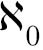
，它是由希伯来文的第一个字母与0构成的，表示这是最简单的无穷集。我们熟悉的那些运算法则对于这个集合是无效的，这与我们对无穷大的理解是一致的，伽利略那部著作中的辛普利西奥也发现了这个问题。例如，从集合的本质我们可以得到下面这些运算法则：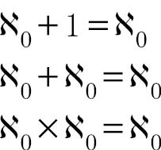
利用集合论，我们可以毫不费力地解决让伽利略头疼不已的那个平方数与正整数的难题。我们知道，可以根据两个集合中的元素是否可以构成一一对应的关系来判断它们是否等势。在解决平方数和正整数的这个难题时，我们同样可以利用这个方法，将它们一一配对，即每个平方数对应一个正整数。由于我们可以完成这个步骤，说明这两个集合是等势的，都是。因此，无穷集与自身的一个子集等势的奇怪现象就可以解释了。我们在指南针指针方向与季节的例子中已经发现，无须知道集合有多少个元素，也可以确定它们是否等势。
如果我们根据自己在周围世界中获得的体验来理解数学过程，就会导致这样的问题。我们难以理解无穷集的性质，是因为我们以为它们具有与有穷数字（尤其是现实世界中数量有限的物体）相类似的特点。然而，尽管集合可以帮助我们理解数字的含义，但是集合不是数字，而是一种数学建构。只有清楚地理解集合是一种截然不同的实体（它与数字的关系可以帮助我们理解数字），我们才能正确理解无穷集的奇怪特性。
在集合论的帮助下，康托尔成功地定义了自然数的无穷性，即 。我们也许会认为，集合论对无穷大的研究已经到了极致。但是，作为数学家，康托尔绝不愿意不加深究就轻信任何结论，这也是他在“”后面附上一个0的初衷。这只是最简单的无穷，但是他还没有证明，包含整数在内的所有数字构成的集合，是否也与之等势。因此，康托尔决定继续研究下去。这一次，他使用的是非常简单易懂的数学证明。现代数学证明往往包含一页又一页的方程式。20世纪，安德鲁·怀尔斯证明著名的费马大定理的过程超过100页纸的篇幅。然而，不用任何方程，我们也可以基本理解康托尔的无穷集合证明。
证明过程必须注重严谨性，在用数学语言描述时，仅仅使用几张图表肯定是不够的。在介绍康托尔的证明时，我将对证明过程略做压缩处理，但是它们仍然非常直观，古希腊几何学家肯定也会欣然接受。不幸的是，与康托尔同时代的人却持有不同的看法。
康托尔考虑的第一类数字是有理分数。他想象把所有正有理分数填入一张表中，使分子从左到右逐项加1，分母自上而下也逐项加1。于是，他得到下面这张表：
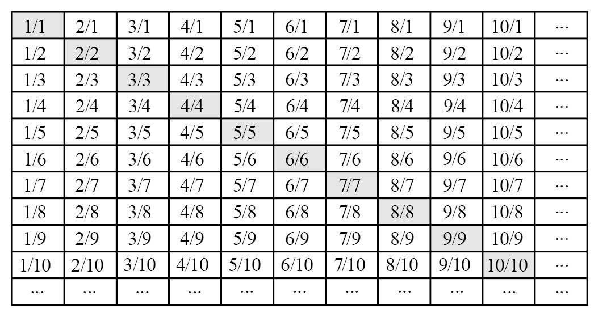
显然，这张表是无法完整画出来的，因为它是一张无穷大的表。但是，我们可以看出它的规律。表中包含所有的有理分数，并且数字1将沿着对角线方向出现无数次。接下来，康托尔需要在表中找出一条可以到达所有位置的简单重复路径，才能证明表中的有理分数集与自然数集等势。也就是说，他需要制定一些法则，即算法，来帮助他通过一个简单的程序覆盖表中的所有方格，比如：
1. 从左上角出发。
2. 向右前进一步。
3. 向左下方运动至表的边缘。
4. 向下前进一步。
5. 向右上方运动至表的边缘。
6. 重复第2步及后续步骤。
通过这个程序，最终可以走过表中所有有理分数，并且不会有任何遗漏。
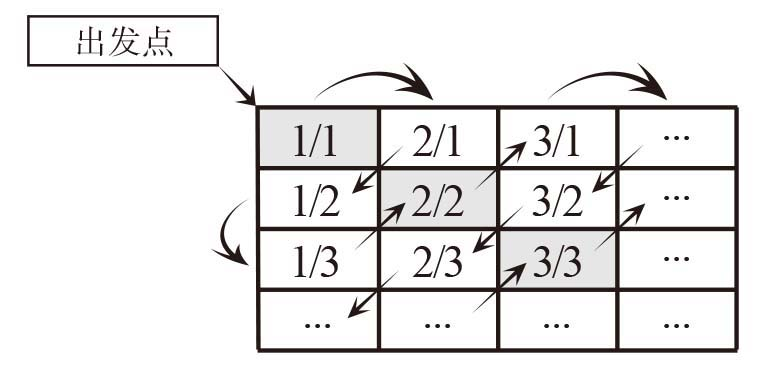
可以采取的路线不止一种，但重要的是，沿着康托尔建立的这条路线，我们可以一步一步地走遍所有方格。我们每迈出一步，就会走过一个方格。我们需要做的就是将这些步骤与整数配对，从而按部就班地建立起一一对应的关系。也就是说，总体来看，表中的有理分数集与整数集等势。因此，有理分数集的元素个数是。
这个结论自然不会让我们大吃一惊。毕竟无穷大非常特殊，而且我们知道下面这个等式是成立的：
× =
直觉告诉我们，有理分数集符合这个规律是有道理的。但是，这并不意味着所有数学现象都是合理的。当康托尔使用同样的方法研究另一个数集时，他无比震惊地发现结果竟然大相径庭。
想一想，0—1之间有哪些数字。（康托尔研究的其实不是这些数字，但是0—1的数字考虑起来最简单。）这里说的“数字”指什么呢？不仅仅是整数（如果我们说的0—1这个范围包含边界，那么共有两个整数），也不仅仅是有理分数（0—1之间的有理分数就是第195页表格第一列中的所有数字，也就是分子是1、分母是各个整数的所有分数。它们是所有分数的一个势为的子集）。除了这些数以外，还有无理数，即与2的平方根相类似的数，但我们在这里讨论的无理数数值都在0—1之间。
从本质上讲，康托尔考虑的其实就是0—1之间的所有小数（即“实数”），而且包含这个范围内所有可能的数字。要使用上面那个方法，我们必须将表格打乱重排，否则小数的开头就会有无数个0，无论多大的纸也写不下这些0。重新排列之后，我们可能会得到下面这张表格：
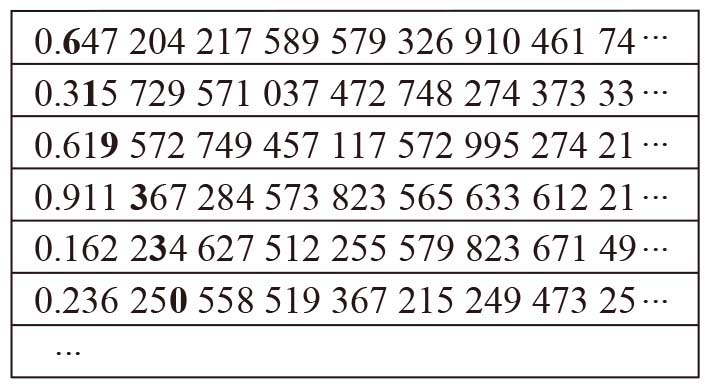
下面这个步骤充分展示了康托尔的天才。他按照每次后移一位的方式，从各个数中选出一个数位加粗。然后，他把这些加粗的数字排列起来，再逐项加上1（如果原来的数字是9，加1之后就会变成0）。这样，这些数字串就可以构成一个0—1之间的小数。例如，我们可以从上表得到下面这个小数：
0.720 441 784 983…
这个数字非常有意思。它与康托尔表格中的第一个数不同，因为它们的第一个小数位不同；它与表格中的第二个数不同，因为它们的第二个小数位不同；它与表格中的第三个数不同，原因同上。以此类推，它与表格中的所有小数都不相同。也就是说，我们得到的这个小数并不包含在上表中。
如果我们可以成功地写出0—1之间的所有数字，我们就可以把这些数字与正整数逐个配对，从而证明小数集与自然数集等势。但事实上，我们无法写出所有小数。康托尔告诉我们（并给出了严格证明），0—1之间的数字比整数多。这个集合的势更大，是更大的无穷大。
接下来，康托尔把探索的触角伸向其他维度。他把这个更大的势称作
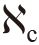
，因为它是0—1之间的连续统的势，也就是数轴上0—1之间所有点构成的集合的大小。然而，我们经常描述的是二维平面或者三维空间里的点，而数学家通过假设，可以轻松自如地考虑任意维度。这些无穷大是否适用于这些假设的维度呢？我们同样可以在几乎不使用数学工具的条件下，轻松地把康托尔接下来的证明过程解释清楚。我们通常会使用一组坐标（也就是我们前面讨论过的笛卡儿坐标系）来定义二维平面上的点，这些坐标可能是坐标图上的x和y，也可能是地图上的经度和纬度。因此，边长为1的正方形区域中的所有点都可以用两个0—1之间的实数来定位。
直觉告诉我们，既然× = ，我们似乎就可以将0—1之间的连续统的势按比例增大，从而将同样的法则应用于正方形中的所有点。但是，这并不是一个有效的证明。康托尔发现，把表示某个点的坐标的两个数放到一起，使它们的各个数位交错排列，就可以得到一个独一无二的小数，而且可以用这个小数确定这个点。这样一来，正方形区域内所有点的势就再次变成了0—1之间所有小数的势。通过交错排列更多的数位，我们可以延展至任意多的维度。就这样，连续统的无穷性再次体现在正方形中的所有点上。
考虑数轴上0—1之间数字的无穷性，可以得出一个在研究无穷大时经常会让我们感到头晕眼花的悖论。根据康托尔的证明，我们知道有理分数集与整数集等势。接下来，我们让另外一个分数集，即1/2，1/4，1/8，1/16…这个数列，与有理分数并列，很容易证明它们也等势。此外，我们已经知道这个无穷级数的和是1。做好这些准备工作之后，好戏就要开场了。
假设我们给数轴上的每个正有理分数发一把伞，以防止它们被雨水淋湿。这些伞都是简单的T形。第一把伞的T形结构在数轴上占据1/2个单位，第二把伞占据1/4个单位，以此类推。一旦所有的正有理分数都撑起伞，整个数轴就会全部被遮盖在雨伞之下。伞的T形结构向两边伸出的幅度相同，也就是说，第一把伞将遮挡住左右各1/4个单位中的所有数字。请注意，由于伞遮挡的都是有理分数，将第一把伞所在的点（同样是一个有理分数）加减1/4都会到达另一个有理分数。
到目前为止，你没有发现任何问题吧？每把伞都立在一个有理分数所在的点上，同时向两边展开，伸到其他有理分数所在的位置。别忘了，我们给每个正有理分数都发了一把伞，因此伞与伞之间至少会相互接触，大多数情况下还会发生重叠，从而把整个数轴都遮挡起来。
也就是说，我们利用雨伞把数轴上0至无穷大的部分全部遮盖起来。现在，再想一想伞的宽度，它们的宽度构成了无穷级数1/2 + 1/4 + 1/8 + …。在不发生重叠的情况下，这些雨伞最多可以覆盖数轴的1个单位，在发生重叠时，覆盖的长度就更小了。总宽度仅为1的物体集合竟然把无限延伸的直线都遮盖住了，你是不是感到困惑不解啊？这就是无穷大给我们的大脑带来的冲击。
然而，尽管康托尔取得了这些成就，他却始终无法证明一个发现的正确性。他最终精神崩溃，或许就是出于这个原因。康托尔认为，无穷应该是分等级的，整数的无穷等级最低，其次是连续统的无穷等级，即。这个观念在他的心目中几乎达到了宗教的高度，事实上他把终极无穷与上帝联系到了一起。但是，他没有办法证明连续统的无穷等级是
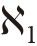
。在 和之间可能还存在其他无穷等级。直到去世，康托尔也没有发现这是一项毫无意义的研究。后来，有人利用数学方法证明，这个被称作连续统假设的断言的正确性根本无法确定。
和之间可能还存在其他无穷等级。直到去世，康托尔也没有发现这是一项毫无意义的研究。后来，有人利用数学方法证明，这个被称作连续统假设的断言的正确性根本无法确定。
这个结论是由数学家库尔特·哥德尔通过他的不完全性定理证明的。不完全性定理是所有数学家的噩梦。该定理认为，任何一个形式系统，只要包含了一阶谓词逻辑与初等数论，就必然存在一个命题，它在这个系统内既无法被证明为真，也无法被证明为伪。有时，即使在同一个世界内，我们可以应用的法则也可能不止一套。前面讨论的平面和曲面上的平行线的特性就是一个例子。但是，当我们试图使用数学工具探索现实世界时，就必须使用一套固定的法则。
哥德尔的研究实质上是要证明任何系统中都会存在某些结果无法确定的问题。也就是说，从根本上看，数学是不完善的。如果把哥德尔不完全性定理简化，就与我们在前文讨论的罗素悖论非常相似了。罗素悖论给出的命题在应用数学系统的法则时会产生无法解决的问题。哥德尔成功地证明康托尔的连续统假设与集合论公理系统不矛盾——这个假设有可能是正确的，但是他无法证明。后来，另一位名叫保罗·科恩的数学家，证明了集合论与连续统假设彼此独立。换句话说，即使该假设不是真的，对集合论也不会产生任何影响。
从本质上讲，他们的研究表明，只要现行的集合论公理系统不做修改，就不可能证明连续统的无穷级别就是高于的。哥德尔本人也着重强调了这一点，他说连续统假设的真实性肯定无法确定。他还说：“根据现在已知的集合论公理系统无法确定它的真实性，只能说明这些公理无法完整地描述现实世界。”
我们知道，公理是为某个数学分支奠定基础的基本假设。数学家必须假定这些“已知”条件是真实的，然后以它们为基础，开始搭建数学结构。运用数学证明时一定会使用这些公理，但是这些公理毕竟是假设，假设肯定会引起人们的质疑，因此这些公理到底正确与否，难免引发争议。
集合论是康托尔所有无穷大研究（更不用说这位数学家眼中的数字基本概念及运算法则）的基础，集合论自身的基础则是ZFC公理系统。其中Z和F分别指将康托尔的集合论研究成果整理成形的数学家策梅洛（Zermelo）和弗伦克尔（Fraenkel），C代表选择公理（把这条公理单独列出的原因马上就会揭晓）。系统中的8条公理对于20世纪的数学界而言非常熟悉：
1.存在性公理。至少存在一个集合。基数源自空集，即没有任何元素的集合。但是，首先必须有集合存在。
2.外延公理。当且仅当两个集合有同样的元素时，这两个集合相等。这条公理具有数学公理的典型特点：表面上是一个显而易见的命题，但是，要让数学有据可循，它又不可或缺。
3.分类公理。对于所有集合与所有条件，都有一个集合与之对应，且该集合的元素正好是原集合中符合该条件的所有元素。换言之，从一个集合中选择一些元素，无论如何选取，所选择的元素都可以构成一个集合。例如，在所有大于1的自然数这个集合中，利用“除自身和1以外没有因数”这个条件，就可以得到另外一个集合，即素数集。
4.无序对公理。对于任意两个集合，都存在第三个集合将前两个集合包含其中。也就是说，可以由两个集合得到第三个集合。
5.并集公理。已知多个集合，则存在某个集合包含属于已知多个集合之中至少一个集合的所有元素。
6.幂集公理。对于任意已知集合，都存在一系列集合，包含已知集合的所有子集。
7.无穷公理。存在一个集合，包含空集和所有非空子集。
8.选择公理。对于任意集合，我们都有办法从该集合的所有非空子集中选择一个元素。
这些公理大多比较可靠，而且不会导致麻烦。但是如果我们处理的是无穷集，最后那条公理，也就是第8条公理，就会成为ZFC系统的大麻烦。隐患就在于“办法”这个词。当然，对于一个已知集合，我们肯定可以从中随机选择一个元素，但是“随机选择”并不能被视为一个有效的数学方法。我们可以不考虑任何特殊原因，从一系列物理对象中随机选择一个，但是利用数学方法完成随机选择的难度非常大，因为很难定义到底如何选择才算真正做到随机，除非集合的元素数量已知。
对于有穷集，我们甚至无须做到随机选择，比如，我们可以采取“选择集合的第一个元素”的方法。但是，整数是所有数字的一个子集，它们沿着正负方向无限延伸。如果我们需要从这个子集中选取一个数字，应该如何做呢？也许“选择中值”这条法则可以帮助我们完成任务，但是无穷集的中值真的那么显而易见吗？
好消息是，我们现在有办法“修复”ZFC系统，为连续统假设这个问题给出一个确切的答案。大多数数学家都认为最好的办法是“力迫法”或“内模型法”（这个方法还有一个上口的别称——V = ultimate L，即集合论宇宙终极可构成集类）。唯一的问题是，力迫法告诉我们连续统假设是错误的，而内模型法则认为连续统假设是正确的。
这两个可能的结果充分显示了数学的本质和它与现实世界的关系。集合论绝对是我们每天都要使用的实用数学的基础之一，然而集合论自身在选用公理这个方面却具有随机性。一条道路通向光怪陆离、令人向往的数学世界，另一条道路则更贴近我们心目中的现实世界。就纯粹数学而言，这不是问题，只能说明我们使用的是两个不同的数学系统，就好比有的数学系统是建立在维度多达数千而且与现实世界毫不相干的基础之上。但是，作为科学的基础，我们还是希望找到一条具有唯一性和确定性的数学道路。
尽管在科学研究中应用数学工具，会因为集合论自身的问题而受到严重影响，但是康托尔的无穷性研究并不会给我们带来明显的麻烦。我们知道，如果方程涉及变化，而且某些值可以通过合并无穷多个无穷小的部分的方式推导得出，牛顿、莱布尼茨及其后来者在进行微积分运算时就会使用潜无穷的概念。在这种情况下，无穷的概念（至少是亚里士多德提出的潜无穷概念）具有让人无法抗拒的价值。我们更不清楚的是，如果脱离了彻底抽象化的数学世界，康托尔的实无穷是否还有任何实际意义。
答案非常简单，到现在为止，我们还不知道无穷在现实世界中到底有没有意义。宇宙可能是无穷无尽的，大爆炸理论并不能彻底否定这种可能性。我们只知道可观测宇宙的直径大约是900亿光年，这个数字是对光自宇宙诞生以来传播的距离与相同时间里宇宙膨胀的速度加以综合之后得出的结论。但是，无论我们这个宇宙是独一无二的，还是无穷无尽的宇宙海洋中不起眼的一滴水（很多现代大爆炸模型认为，在更大的多元宇宙中发生过多次大爆炸），宇宙的膨胀都有可能是没有限度的。
从某些方面看，无限宇宙似乎比有限宇宙更有吸引力，因为有限宇宙会让人们情不自禁地遐想：宇宙边界之外是什么？但是，数学家已经找到了一个可能的答案：即使是有限宇宙，也可能完全没有边界。
这个答案似乎与我们的直觉不符，因为这在常见的三维空间中是很难想象的，但是我们可以轻松地找到一个二维类比对象——月球表面。（我选择月球表面而没有选择地球表面，是因为地球表面上的海洋会破坏它的连续性。）月球上有一个有限空间，即它的表面，而且这个有限空间没有边界。我们可以朝着任意方向一直走下去，也不会走到月球的边缘。站在月球上看，月球表面似乎是一个平面。把平面折向第三个维度，让边缘结合到一起，平面的边界就消失了。要在宇宙中想象出类似效果，我们需要把宇宙的体积折向第四个维度。在折叠之前，我们在某个位置上跨出一步就相当于从宇宙的一个侧面跨出去，但是在折叠之后，跨出去的这一步会让我们从宇宙的这一面进入与之相对的另一面。
现实世界中另一个可能真正具有无穷性的事物是时间。亚里士多德认为时间没有尽头，可以被视为一个无限膨胀的过程。有的宇宙学理论认为宇宙也没有起点，尽管更受欢迎的大爆炸理论揭示了宇宙的起源。但是，有人认为，如果宇宙膨胀到一定程度，之后再也不会发生任何变化，宇宙就走到了尽头。在这种情况下，我们有理由相信时间已经不存在了，因为时间的流逝将没有办法表示。
亚里士多德还相信时间和空间都可以被分割成许多无穷小的部分（亚里士多德不是原子论者）。现代物理学家大多认为这个观点可能不正确。仅仅因为物理现实的其他方面可以量子化（可以分割成离散粒子），时间和空间就一定也如此吗？考虑到万有引力已经被引入量子框架，他们更加确信这个观点不正确了。表示空间粒度效果最好的备选量度就是普朗克长度和普朗克时间，这两个单位的值是由光速c、引力常量G和普朗克常量h三个基本常数决定的。
当人们建立这两个普朗克单位时，它们被视为宇宙的基本属性，而不是人为创造的两个概念。普朗克长度等于
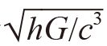
，大约是1.6×10–35米，普朗克时间是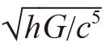
，大约等于5.4×10–44秒。还有一个普朗克单位是普朗克质量，即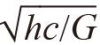
，大约等于2.2×10–8千克。虽然人们很少提及普朗克质量，但这是唯一一个与我们体验过的事物具有可比性的普朗克单位。（这些单位的值非常小，人们从来没有用过其他任何方式来衡量这些值。）如果时间和空间可以量子化，那么我们有可能（尽管无法确定）使用这些值来测算它们的粒度。（普朗克质量肯定不是质量的最小单位，它大约是电子质量的1022倍。有人认为，普朗克质量可能是基本粒子的最大可能质量。）有趣的是，可能出现真正的无穷的一个领域是量子物理。原子、电子等量子的属性不同于我们在“宏观”世界中熟悉的各种事物的属性。例如，量子的一个特性叫作自旋（量子自旋并不是指真的自旋，而是借用自旋物体来比喻某种属性），但是我们无法用具体的值来表示它。在任一特定方向上测量，我们会发现量子自旋的方向可能“向上”，也可能“向下”。
在测量之前，我们无法预知测量结果，因为粒子的自旋没有实值。其实，自旋就是一种叠加状态，比如，粒子有27%的可能性向上自旋，有73%的可能性向下自旋。也就是说，如果我们在某个特定方向上重复测量，测量结果是“向上”和“向下”的概率分别是27%和73%。但是，我们只能测量概率（这要归功于薛定谔方程），而无法预知测量结果。
在叠加状态下，自旋可以被视为一种方向。我们可以把它想象成箭头，箭头朝上表示上旋的可能性是100%，箭头朝下则表示下旋的可能性是100%。在叠加状态下，箭头指向某个中间方向。（可能性为各占一半，箭头指向水平方向。）由此可见，我们实际上得到了一个实数——一个无穷小的数，其表现形式是叠加状态的方向。因此，以这些粒子自旋为基础的量子计算机的潜能远远超过二进制的传统计算机。如果准备入侵现实世界，也许它会通过量子位，甚至只能通过一种间接的方式来实现这个目的，因为我们永远无法知道它的确切值。但是，这种入侵是真实的，因为它会对测量结果产生直接影响。
然而，有一件事肯定是真实无误的。尽管对于数学家而言，无穷就是一个雅致的玩具，但是在科学研究中却经常会招致难以解决的麻烦。在物理学领域，例如在研究前面讨论的电子反冲时，无穷大概念经常会发挥更大的价值。无论我们研究的是黑洞内部结构，还是反冲电子这种常见现象，无穷都有可能悄无声息地出现在我们眼前。电子还会导致另外一个问题，因为人们认为电子是没有维度的点粒子。但是，这就意味着随着我们越来越接近电子，电场强度就会趋近于无穷大，而离电子最近的肯定是它自己。
当用量子电动力学解释光与物质粒子之间发生的电磁相互作用时（这种电磁相互作用对于我们所有的日常体验来说几乎都是不可或缺的），无穷引起了无数麻烦，电子与自身电场发生相互作用产生的自能就是其中之一。然而，人们普遍认为，就预测观测值而言，量子电动力学是迄今最成功的理论。那么，它是如何处理无穷问题的呢？答案是重正化，归根结底就是用观测值取代那些荒谬的无穷值。
在遇到无穷时，物理学家并不总是束手无策，因为他们随时可以借助微积分中的潜无穷概念来化解危机。但令人尴尬的是，物理学理论似乎随时会抛出足以导致麻烦的实无穷概念。物理学家马克斯·泰格马克认为，如果我们支持那些容许实无穷概念存在的理论，就等于给未来的物理学制造麻烦。
他特别指出，宇宙膨胀说就是这种理论的一个代表。宇宙膨胀说是帮助早期大爆炸理论解决某些问题的“补丁”。该学说认为，大爆炸发生之后，宇宙空间以远超光速的速度急剧膨胀，我们现在可观测到的宇宙从此开始了它的生命历程。现行的宇宙膨胀说与观测结果的一致程度比较高。（从某种意义上讲，这也是理所应当的，因为宇宙膨胀说的创立初衷就是实用，为了与新数据吻合，又修改了若干次。但是，自现代宇宙膨胀说建立之后，已经有很多观测结果迟迟不能得到合理的解释。）
泰格马克称，麻烦的根源就在于膨胀说秉持宇宙体积可以无限膨胀的观点。根据这个观点，最终将会形成一个空间无穷集，将所有可能的物理情况都包含其中，导致膨胀说在诸多领域里完全丧失做出明智预测的能力。如果一切都有可能，我们就无法准确预测任何结果，科学的意义也会遭到严重破坏。从这个角度看，宇宙膨胀说与致命计算机病毒有几分相似，如果听之任之，所有的科学理论都将遭遇灭顶之灾。
泰格马克指出，就像橡皮筋因为原子数量有限而无法无限拉伸一样，根据时空的量子性质，宇宙的膨胀也应该是有限度的；而且，如果物质真的具有连续性，那么这个说法基本上就是对的。他认为，有了这个限度，一切问题都将迎刃而解。无论是密度无限大的黑洞奇点，还是阻碍量子引力理论发展的数学难题，都不再是问题。他大声疾呼：我们不需要实无穷！
最后，泰格马克说：“我们物理学家面临的挑战是找到这个简便有效的方法，用不包含无穷的方程描述真正的物理定律。我们必须先对无穷提出质疑，才可能积极投身这项探索活动。我认为，我们有必要把它赶出物理学界。”尽管泰格马克的话有些特立独行，但是他的思想可能代表了科学的一个新起点。
与令人尴尬的物理学领域的无穷不同，康托尔研究的数学领域的无穷对日常生活与科学研究从未产生任何重大的影响。从研究数字与现实之间关系的角度看，我们更想知道哥德尔的研究成果，以及选择公理因为自身问题而导致的随机性到底会产生什么样的影响。集合论是数学的基础，但它自身却有一个有趣的缺陷。或许这些新发展的最大意义是告诉我们，将数学视为现实世界的直接基础，会带来一定的风险。果真如此的话，就意味着现实也具有随机性。
尽管直到康托尔去世，他的无穷理论也没有得到广泛应用，但是物理学却开启了一个新的发展方向，使数学的核心地位得到了史无前例的巩固。从此以后，人类对世间万物的认知，以及人类的日常生活，几乎都将因此而发生改变。